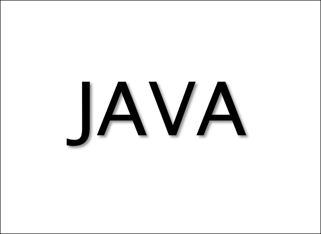

Java는 썬 마이크로시스템즈의 제임스 고슬링(James Gosling)과 다른 연구원들이 개발한 객체 지향적 프로그래밍 언어이다.
1991년 그린 프로젝트(Green Project)라는 이름으로 시작해 1995년에 발표했다. 처음에는 가전제품 내에 탑재해 동작하는 프로그램을 위해 개발했지만 현재 웹 애플리케이션 개발에 가장 많이 사용하는 언어 가운데 하나이고, 모바일 기기용 소프트웨어 개발에도 널리 사용하고 있다. 현재 버전 10까지 출시했다.
자바의 개발자들은 유닉스 기반의 배경을 가지고 있었기 때문에 문법적인 특성은 파스칼이 아닌 C++의 조상인 C 언어와 비슷하다.[1] 자바를 다른 컴파일언어와 구분 짓는 가장 큰 특징은 컴파일된 코드가 플랫폼 독립적이라는 점이다. 자바 컴파일러는 자바 언어로 작성된 프로그램을 바이트코드라는 특수한 바이너리 형태로 변환한다. 바이트코드를 실행하기 위해서는 JVM(자바 가상 머신, Java Virtual Machine)이라는 특수한 가상 머신이 필요한데, 이 가상 머신은 자바 바이트코드를 어느 플랫폼에서나 동일한 형태로 실행시킨다. 때문에 자바로 개발된 프로그램은 CPU나 운영 체제의 종류에 관계없이 JVM을 설치할 수 있는 시스템에서는 어디서나 실행할 수 있으며, 이 점이 웹 애플리케이션의 특성과 맞아떨어져 폭발적인 인기를 끌게 되었다.